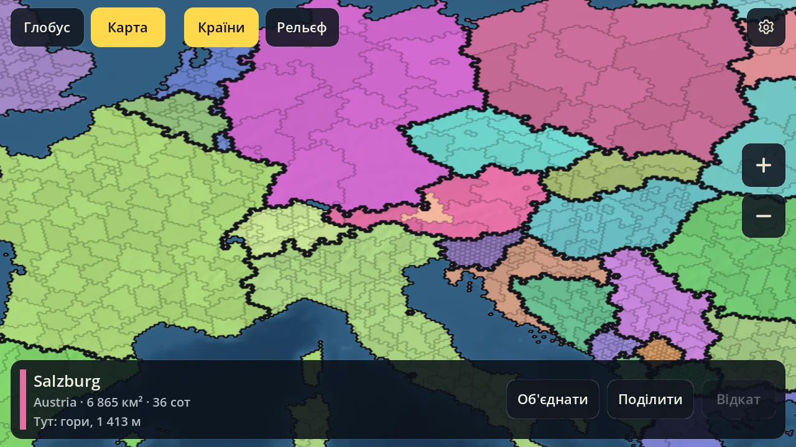
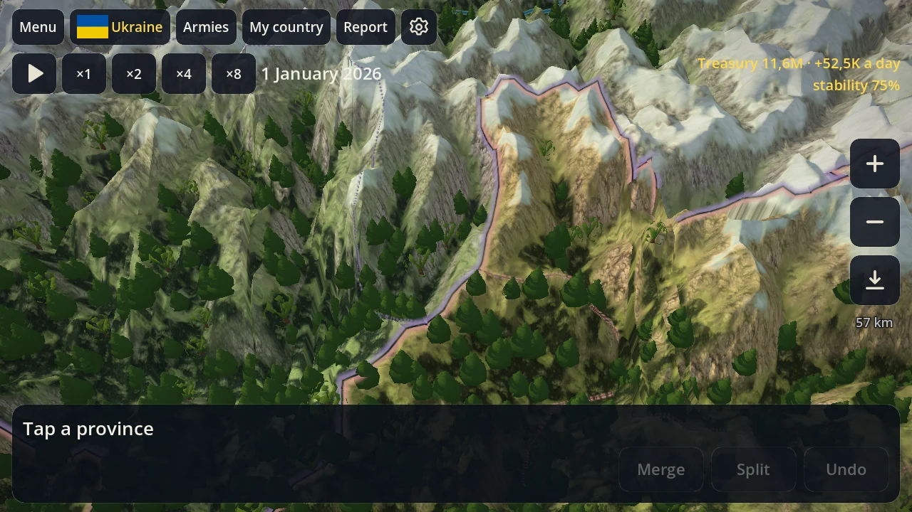

Android test build
KORDON
World History Strategy
A grand strategy on the real Earth made of hexagonal cells. Play on a globe or a flat world map, merge provinces and redraw borders any way you like. All eras, solo and multiplayer are on the way.
Android 10 or newer · 64-bit phone or tablet (arm64)
No ads and no tracking. This site collects no data.
A first look
This is an early build: the world map and province editing. There is no economy, war or diplomacy yet.



In the test build now
The real Earth in cells
The whole world is made of hexagons: countries, regions and coastlines follow real maps.
5 detail levels
From the normal map with 60 km cells to the extreme one: 1.5 million land cells, each about 10 km across.
Globe ↔ map
One tap smoothly unrolls the globe into a flat world map and back.
Your own provinces
Merge several provinces at once, cut out a new one by drawing its outline, undo any step.
Relief
Every cell knows its height and terrain: plains, hills, mountains or ice. On top, mountain shading and sea depths from real Earth elevation data.
Up to 120 FPS
Smooth on fast screens; frame rate and resolution are up to you.
Planned
Few mechanics, each one deep and tied to the others.
Economy
Province development: land value = area × development.
War
A war map and tactical figurine battles whose rules change with the era.
Diplomacy
Negotiations with other countries.
Strong AI
Opponents with personalities that play by the same rules.
Multiplayer
Two modes: real time or turn-based.
Eras and scenarios
All eras of history and short scenarios.
Editor and mods
Make your own maps and mods.
Final trial
Every era ends with a trial you have to survive.
How to install
1. Download
Download Kordon.apk with the button on this page.
2. Open
Open it from the notification or the Downloads folder.
3. Allow
If Android asks, allow installing from this source (your browser or file manager) and go back.
4. Install
Tap «Install». New versions will come by themselves after that.
Always the newest build
The test build updates itself: on Wi‑Fi it downloads and installs the new build, on mobile data it shows a button. The Google Play version comes later.
Questions and ideas: pegasohlib12@gmail.com